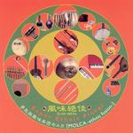

Home Artist links Label link

Molca - Super Ethnic Flavor
| Artist: | Molca |
| Title: | Super Ethnic Flavor |
| Label: | Poseidon PRF-022 |
| Length(s): | 65 minutes |
| Year(s) of release: | 2005 |
| Month of review: | [12/2006] |
Line up
Hikari Soma - flute
Shiho - fiddle
Jun S - ethnic strings
Satoshi Ikeda - melodion, bass, piano
Miura-Igo - ethnic percussion
Tracks
| 1) | Balkan Dawn | 6.40
|
| 2) | Shamrock Storm | 5.36
|
| 3) | Lost In The Night | 4.25
|
| 4) | Areia | 5.42
|
| 5) | Jiji | 7.21
|
| 6) | There's A Fire In The Kitchen! | 4.49
|
| 7) | Armadillo Goes To The Caribbean | 5.03
|
| 8) | Spring | 5.14
|
| 9) | My Friend | 4.54
|
| 10) | Black Maria | 5.57
|
| 11) | Bulgar Dance | 4.02
|
| 12) | Allo Bonjour! | 5.17
|
Summary
The music
It will surprise you to hear that a disc with this title has something of an ethnic approach. Not only is a multitude of ethnic instruments used (I won't write them all down, the liner notes mention several dozens), but the musical style is sort of folky and worldly. Balkan Dawn features bouzouki, and therefore creates something of a, well, Balkan atmosphere. Shamrock Storm has an accordeon or bandoleon type instrument, which I guess is the melodion, creating a Parisian atmosphere, mixed with more Greek influences. Lost In The Night mixes latin styles with flute. Areia uses a string instrument mostly heard in Chinese music and some sitar.
Despite the use of the many instruments, the dominant style is a Balkan folk style mixed with Irish and Parisian influences.
Conclusion
Molca dub themselves ethnic fusion. This is not fusion in the sense of a vein of jazz, but the music sure fuses different ehtnic (folk) styles. A lot of those are European or South American. By using instruments that are typical for an area, some track's styles are associated with that area's music. Still, the majority of the tracks is more folky than it is ethnic. This all sounds friendly enough, but lacks the strength to keep the attention over a full album's time. The result is an at times interesting album that does more along the lines of presenting a multitude of ethnic styles, than it necessarily does on being enjoyable for the listener.
© Roberto Lambooy